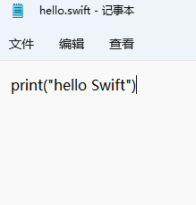
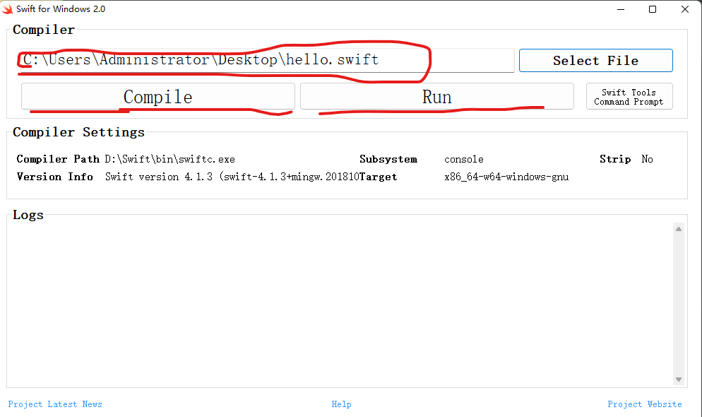
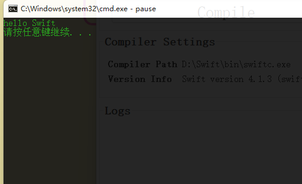

已windows为例
创建hello文本文件，后缀改为swift。写入print("hello,swift")

打开swift选择文件路径
先点击编辑:Compile 再点击运行:Run

程序在终端正常输出

常用命令:
pwd 查看当前工作目录
cd 切换目录
ls 查看当前命令
mkdir message 创建message文件夹
exit 退出终端||:q
ps：和linux命令一样
vi hello.swift 使用vim创建hello.swift
点击insert插入模式编写程序
编写完成后按esc保存
输入:q退出 退不出去的话 输入:wq
ls 查看文件
swiftc hello.swift 编译文件
./hello 运行文件